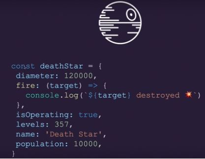
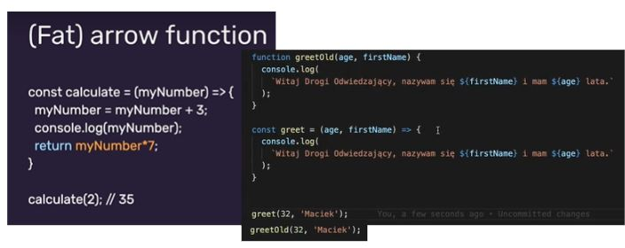

Obiekt
JavaScript jest obiektowym językiem programowania.
Prawie wszystko w JS jest obiektem, bo nawet typy proste, mimo iż
nie są obiektem - to się tak zachowują.
Obiekt jest strukturą danych, nasz świat jest obiektowy.
Obiekt : samochód. Ma zbiór własności i zbiór akcji, które może
wykonać. Kolejny obiekt - człowiek.
Obiekt jest też zmienną.
Tak definiujemy obiekt:

console.log(deathStar);
Wypiszą nam się te wartości ale zawsze w kolejności alfabetycznej.
Czemu nie mam alfabetycznie w konsoli u mnie?
key: value/klucz: wartość “,” na końcu
Klucz - unikalny w ramach obiektu
Wartość - prymitywy/funkcje/zagnieżdżenia
const deathStar = {
diameter: 120000,
fire: (target) => {
console.log(`${target} destroyed`)
},
isOperating: true,
levels: 357,
name: 'Death Star',
population: 10000,
isLightOn: true,
comander: {
name: 'Darth Vader',
age: 44,
}
}
console.log(deathStar);
/let, zmienne -> własności (property), zmienne w obiekcie, w
środku nazywamy własnościami.
()=>{}, funkcje -> metody (methods), np. diameter własność, fire
metoda
. dot notation, odwoływanie się do rzeczy
console.log(deathStar.name); - teraz nam wypisze tylko to co w
name
console to też obiekt, console.log to jedna z metod obiektu console
document(obiekt).querySelector(metoda) ()
element.innerHTML(własność) bo po nim jest =
korzystamy z gotowych obiektów, które dostarcza nam przeglądarka
console.log(console); - Wyświetla nam wszystkie metody, które ma
obiekt console.
console.log(typeof deathStar); dostajemy object
console.log(typeof deathStar.name); dostajemy string
obiekt poznajemy po tym, że w konsoli są nawiasy sześcienne i można
je rozwinąć.
console.log(deathStar.comander.name);
tyle kropek jaki jest poziom zagnieżdżeń
Jak wywołujemy metodę? nazwa obiektu.fire
deathStar.fire('rebel ship');
info rebel ship destroyed ( Jak zrobić tą gwiazdkę, to buuumm?)
[] bracket notation
console.log(deathStar['name']); ‘name’ tak musi być a nie name
(undefined),szuka stringa podpiętego pod name
chyba, że
const myProperty = 'name';
console.log(deathStar[myProperty]);
to wtedy ok, bo zostanie przekazane powiązanie do wartości name
const myProperty = 'name';
const showMeProperty = (myProperty) => {
console.log(`Twoja własność ${myProperty} to:
${deathStar[myProperty]}`);
}
showMeProperty('levels')
Dostajemy twoja własność levels to: 357
zamiast level coś co nie istnieje to dostaniemy undefined.
Immutability w obiektach
JavaScript jest obiektowym językiem programowania.
Niemutowalność w obiektach. Nie możemy zmieniać wartości primitive
values w JS. To co zmieniamy to połączenie między nimi a zmiennymi.
To chyba rozumiem.
Jak to się teraz zachowuje w obiektach?

Wszechświat wartości jest ten sam.
chcemy zmienić humanTwo.age = 35;
console.log(humanTwo)
I to nam się zmieni ładnie na 35, linie są na zielono, bo tylko do
obiektu jest połączenie const , mamy consta na obiekt, a od obiektu
już nie. Własności od obiektu już nie są zdefiniowane jako const,
one mogą być przepinane na inne wartości. Mutowanie obiektu.
Powstanie połączenid do 35.
Typ złożony (obiekt) od typu prostego różni się tym, że te obiekty
możemy mutować, a właściwie te własności naszego obiektu.

humanTwo i humanOne będą takie same

tworzymy obiekt humanOne a przy tym przypisaniu Two = One mówimy
tylko tyle, że humanTwo ma wskazywać dokładnie na to samo co
humanOne. A to nam wskazuje bezpośrednio na obiekt. Nie tworzymy
nowego obiektu tylko podpinamy się pod ten sam obiekt.
Zmiana humanTwo.age = 35;
I age zmienia się w 2 zmiennych. Przez to, że humanTwo wskazuje na
ten sam obiekt co humanOne, to nawet jeżeli zmienimy wiek za pomocą
humanTwo to też się zmieniło w zmiennej human.One.


age pokaże 32. Age zostanie wpięty pod 32, bo my odpytujemy nasz kod
co się teraz znajduje w human.One age jakie połączenie i on zwraca
tylko połączenie czyli 32. Nie pole przypisujemy, tylko linię
zmiana humanOne.age = 35
przed zmianą 32, 32, po zmianie 35, 32 (podobnie jak z tym x i y)
Z zagnieżdżeniem:
Pod tym adresem kryje się połączenie, co jest po address, czyli
wartości street i city.
zmiana humanOne.address.street = ‘Lipowa’
W tej sytuacji dla obu zmieni się na Lipowa. Jeżeli adres człowieka
drugiego ma wskazywać na ten obiekt, to ulica też się zmieniła w tym
adresie. Jest jeden obiekt z adresem. Tak jest połączone, że adres
na wskazywać na to samo na co wskazuje ten adres, a ten adres
wskazuje na ten obiekt.

Tu się tworzy nowy obiekt.
zmiana humanOne.address.street = ‘Lipowa’, wtedy humanOne street
zmienia sie na Lipowa
Ważne na co wskazuje wskazanie, to połączenie! Czy na wartości
proste czy na obiekty!
Funkcje
fun(‘Hi!’), console.log to też funkcja
Funkcja: f (x) = x
argument/wynik
f (x) = x*7
Fukcja na wejściu dostaje dane - argumenty. Dla każdego argumentu
zwraca jakąś wartość.Posiada określony wzór.
Funkcja w JS:

deklaracja, nazwa funkcji, parametr-nazwa parametru
function calculate(myNumber) {
console.log(`Dostałam $(myNumber)`);
return myNumber*7;
}
Mamy zdefiniowaną funkcję ale nie została wywołana dlatego nie
pokazuje się nic w konsoli.
calculate(1), const myResult = calculate(1); Teraz w konsoli :
Dostałam 1
function calculate(myNumber) {
console.log(`Dostałam ${myNumber}`);
return myNumber*7;
}
const myResult = calculate(1);
console.log(myResult);
Calculate(1) wywołujemy funkcję. Podajemy argument, czyli myNumber w
tym przypadku 1. Zwracamy (return), że wartość na, którą ma
wskazywać zmienna myResult to myNumber*7 - przy użyciu const.
Nie musimy podawać bezpośrednio wartości, np. możemy podać naszą
zmienną age. Bo age mam wyżej const age = 27
const myResult = calculate(age);
konsola zwraca: Dostałam 27, 189
Czy myNumber może zmienić wartość age?
Wpisujemy console.log(age); Nie zmieni! nawet jak dopiszemy myNumber
= myNumber * 7;
function calculate(myNumber) {
console.log(`Dostałam ${myNumber}`);
myNumber = myNumber * 7;
return myNumber;
}
const myResult = calculate(age);
console.log(age);
console.log(myResult);
console.log(age);
bo te wartości proste są niemutowalne, to co przekazujemy do funkcji
to nie jest zmienna, przekazujemy wskazanie na co ona wskazuje, to
połączenie, czyli wskazanie na wartość 27. Przekazujemy to
połączenie jako argument do tej funkcji.
Mamy funkcję, która nam mnoży przez 7 i zwraca nam myNumber
Słowo kluczowe - return
Return sprawia, że jeżeli zrobimy taką operację calculate(age)
const myResult = calculate(age);
to wynik tej funkcji będzie zwrócony
Jak skasujemy return to dostajemy undefined. Bo wtedy ta funkcja
wykonuje obliczenia ale niczego nie zwraca.
jak zrobimy tak:
function calculate(myNumber) {
console.log(`Dostałam ${myNumber}`);
myNumber = myNumber * 7;
console.log(`wynik ${myNumber}`);
}
const myResult = calculate(age);
console.log(age);
console.log(myResult);
console.log(age);
to wynik się zrobi “wynik 189”, funkcja się wykonuje, operacje w
środku się dzieją
Nie da się przypiąć wyniku tej operacji, stworzyć połączenia do
wyniku, żeby użyć jakiejś zmiennej dodatkowej: const myResult =
calculate(age);
dlatego ta zmienna: console.log(myResult); dostaje undefined, bo nie
ma zdefiniowanego returna w tej funkcji, czyli tego co ta funkcja
musi nam zwrócić.
A jak zrobimy tak: return `wynik ${myNumber}`;
function calculate(myNumber) {
console.log(`Dostałam ${myNumber}`);
myNumber = myNumber * 7;
return `wynik ${myNumber}`;
}
const myResult = calculate(age);
console.log(age);
console.log(myResult);
console.log(age);
to pod zmienną myResult będzie siedział string, napis wynik 189, to
nie zawsze musi być liczba.
Jeżeli funkcja nie ma zdefiniowanego returna to będzie undefined, a
jak jest return to może być różnego typu. Funkcja może też
przyjmować więcej rzeczy nie tylko pojedynczą liczbę czy napis,
argumentów może być więcej.
Funkcja powitalna
function greet(age, firstName) {
console.log(`Hej, nazywam się ${firstName} i mam ${age} lat`);
}
greet(18, 'Ania')
Dostaje 18 i Ania
Jak podmienie na greet(age, firstName) to dostaje to co było
wcześniej zdefiniowane czyli 27 Anna
Jak nie podamy jakiegoś argumentu greet(age); to dostaniemy
undefined
jeśli podam odwrotnie greet(firstName, age) to pokaże mam na imię 27
i mam Ania lat
bo pod age z function greet(age, firstName) podpisuje firstName z
greet(firstName, age)
Można też podawać stringi.
Funkcję piszemy po to jeśli chcemy wywołać ją kilka razy, mamy
fragment kodu który się powtarza.
greet(age, firstName);
greet(20, 'Ola');
Może być kilka razy w różnych miejscach w kodzie
Funkcja, która będzie uzupełniać wybrany przeze mnie element wybraną
treścią. Funkcja do podmieniania kontentu.
Nawiasy sześcienne ograniczają nam blok kodu, funkcja składa się z
tego co jest pomiędzy nawiasami.
function createContent(querySelectorContent, content) {
const element = document.querySelector(querySelectorContent);
element.innerHTML = content;
}
br/> createContent(`.heading__paragraph--js`, 'Witaj
świecie');
I w podtytule pokazuje się Witaj świecie.
Nie ma returna, ale robi operacje w środku. Operacja polega na tym,
że przekazuje to co ma iść do querySelector. Tworzymy element, który
żyje tylko w obrębie tego bloku, kodu. Wewnętrzy HTML elementu
przyjmuje wartość contentu, który jest drugim parametrem naszej
funkcji.
Funkcja w JS:
Deklarujemy nazwę funkcji - nie zawsze. W środku dokonujemy
obliczeń/wykonujemy zadania. Funkcja przyjmuje argumenty(parametry)
(ale nie musi)
function helloWorld() {
console.log(‘Witaj świecie’)
}
helloWorld();
I tak się wywoła. Funkcja zwraca zawsze coś (nawet jeśli nie mamy
return - wtedy funkcja zwraca undefined)
Po co definiujemy funkcje? żeby uzywać kodu, który się powtarza.
Deklarujemy kod, który się powtarza (DRY - don’t repeat yourself)
Zwiększamy czytelność kodu
Łatwiejsze szukanie błędów
Odpowiedzialność za wykonywanie zadania w jednym miejscu.
(Fat) arrow functions - jeszcze jeden sposób zapisu funkcji =>

Można też skrócić ten zapis, to jest to samo

i z calculateOld też zadziała
tak też zadziała, bo to też jest wskazanie na jakąś wartość:
const calculate = (myNumber) =>myNumber*7
console.log(calculate(7))
(Fat) arrow function:
Skraca zapis deklaracji funkcji
Zwiększa czytelność (dyskusyjne)
Nie tworzy nowego kontekstu ‘this’, nie ma dostępu do ‘arguments’ i
‘super’
Nie jest zamiennikiem tradycyjnej funkcji, ale w większości
przypadków nie zobaczysz różnicy.